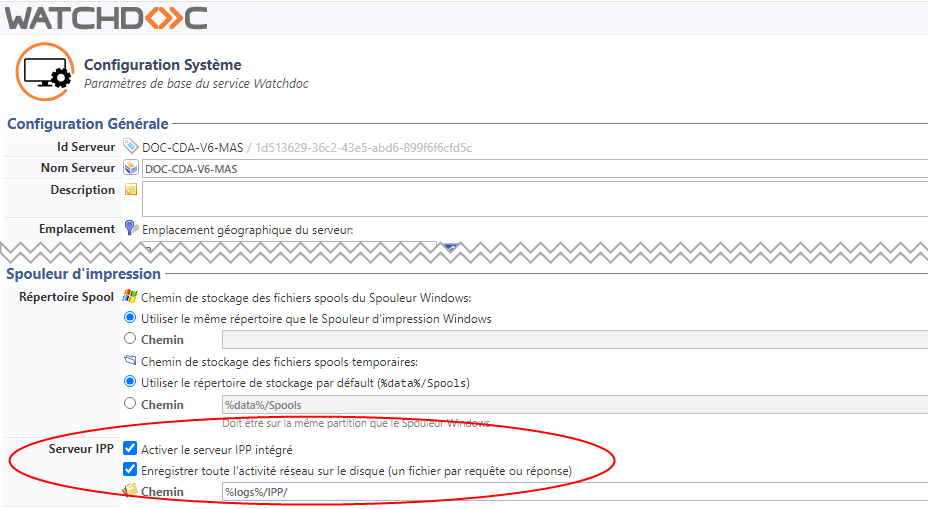
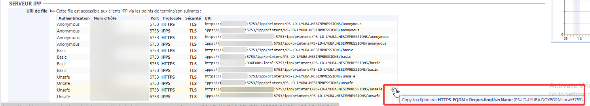
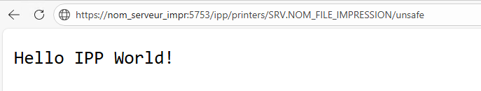
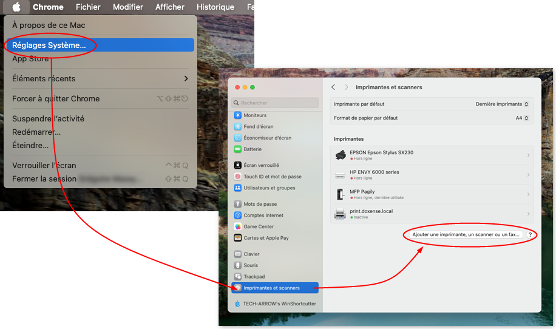
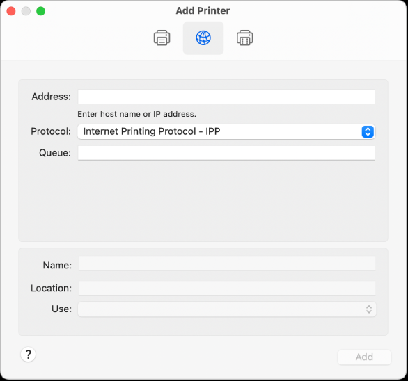

Watchdoc - Activer l'impression IPP sur des postes Mac os®
Sur des postes Mac os®, il peut être nécessaire d'activer l'impression IPP Internet Printing Protocol (protocole d'impression Internet) ou IPP, définit un protocole standard pour l'impression et ce qui s'y rattache, comme les files d'attente d'impression, la taille des médias, la résolution, etc.
Comme tous les protocoles basés sur IP, IPP peut être utilisé localement ou sur l'Internet vers des imprimantes à des centaines ou des milliers de kilomètres. Toutefois, au contraire d'autres protocoles, IPP supporte les contrôles d'accès comme l'authentification et le chiffrement, le rendant ainsi plus sécurisé que d'autres solutions plus anciennes.
(Source : Wikipédia).
Internet Printing Protocol (protocole d'impression Internet) ou IPP, définit un protocole standard pour l'impression et ce qui s'y rattache, comme les files d'attente d'impression, la taille des médias, la résolution, etc.
Comme tous les protocoles basés sur IP, IPP peut être utilisé localement ou sur l'Internet vers des imprimantes à des centaines ou des milliers de kilomètres. Toutefois, au contraire d'autres protocoles, IPP supporte les contrôles d'accès comme l'authentification et le chiffrement, le rendant ainsi plus sécurisé que d'autres solutions plus anciennes.
(Source : Wikipédia).
Activer le serveur IPP sur Watchdoc
Pour activer le serveur IPP sur Watchdoc :
-
depuis le Menu principal, section Configuration, cliquez sur Configuration avancée ;
-
dans Configuration avancée, cliquez sur Configuration système ;
-
dans Configuration système, rendez vous dans la section Spouleur d'impression ;
-
cochez la case Activer le serveur IPP intégré ;
-
cochez Enregistrer toute l'activité si vous souhaitez conserver des traces de l'activité réseau, puis indiquez le chemin du dossier dans lequel les traces seront enregistrées :

-
Validez la configuration système.
Récupérer l'URL de connexion de la file
Pour récupérer l'URLde connexion de la file :
-
depuis le Menu principal, section Exploitation, cliquez sur Files d'impression, emplacements, groupes de files & pools ;
-
cliquez sur la file que vous souhaitez installer sur votre Mac ;
-
cliquez sur l'onglet Propriétés de la file ;
-
dans la section IPP Server repérez et sélectionnez l'adresse HTTPS (nous préconisons de copier l'URL correspondant au mode Basic qui nécessite une authentification par compte/mot de passe) :

Installer une imprimante réseau sur le poste de travail Mac®
Prérequis
Vérifiez que le port DSP 5753 possède un certificat du domaine.
N.B. : cette configuration peut perturber la communication entre vos périphériques d'impression et le serveur.
Vérifiez également que le port 5753 du poste de travail vers le serveur d'impression est ouvert.
-
dans un navigateur, collez l'url copiée dans Watchdoc ;
-
vérifiez que le navigateur affiche le message "Hello IPP world !" :

è Si le message ne s'affiche pas, vérifiez que l'url ne comporte pas d'erreur et assurez-vous que le port 5753 est bien ouvert avant de réitérer l'essai.
A l'aide de l'URL de la file, créez la file d'impression sur le Mac® grâce à la procédure suivante :
-
accédez au poste Mac® en tant qu'administrateur ;
-
rendez-vous sur le site officiel du fabricant de votre périphérique d'impression ;
-
depuis ce site, téléchargez le pilote correspondant au périphérique à installer et à la version de l'OS de votre Mac® ;
-
installez le pilote d'impression ;
-
dans le menu d'administration du poste de travail, cliques sur Réglages Système > Imprimantes et scanners ;
-
dans le module Imprimantes et scanners, cliquez sur Ajouter ;

-
Dans la fenêtre Ajourter une imprimante, cliquez sur le bouton Avancé
complétez les champs :
-
Type : sélectionnez Internet Printing Protocol (https) ;
-
Device : sélectionnez Another device ;
-
URL : saisissez l'URL sélectionnée dans Watchdoc ;
-
-
Cliquez sur l'icone IP :

-
dans l'interface, complétez les champs :
-
Adresse : collez l'adresse URL copiée dans Watchdoc ;
-
Protocole : sélectionnez Internet Printing Protocol - IPP ;
-
File d'attente : indiquez le nom de la file d'impression associée à l'adresse saisie url. Si vous ne la connaissez pas, laissez le champ vierge ;
-
Nom : saisissez le nom de l'imprimante afin de pouvoir l'identifier dans le menu ;
-
Emplacement : indiquez la localisation du périphérique d'impression ;
-
Utiliser : sélectionnez le pilote préalablement téléchargé ;
-
-
cliquez sur Ajouter ;
-
dans l'interface Configuration, choisissez les options de l'imprimante que vous souhaitez ajouter, puis cliquez sur OK ;
-
depuis le Mac®, lancez une impression en sélectionnant le périphrérique d'impression précédemment ajouté et vérifiez qu'elle s'effectue correctement.